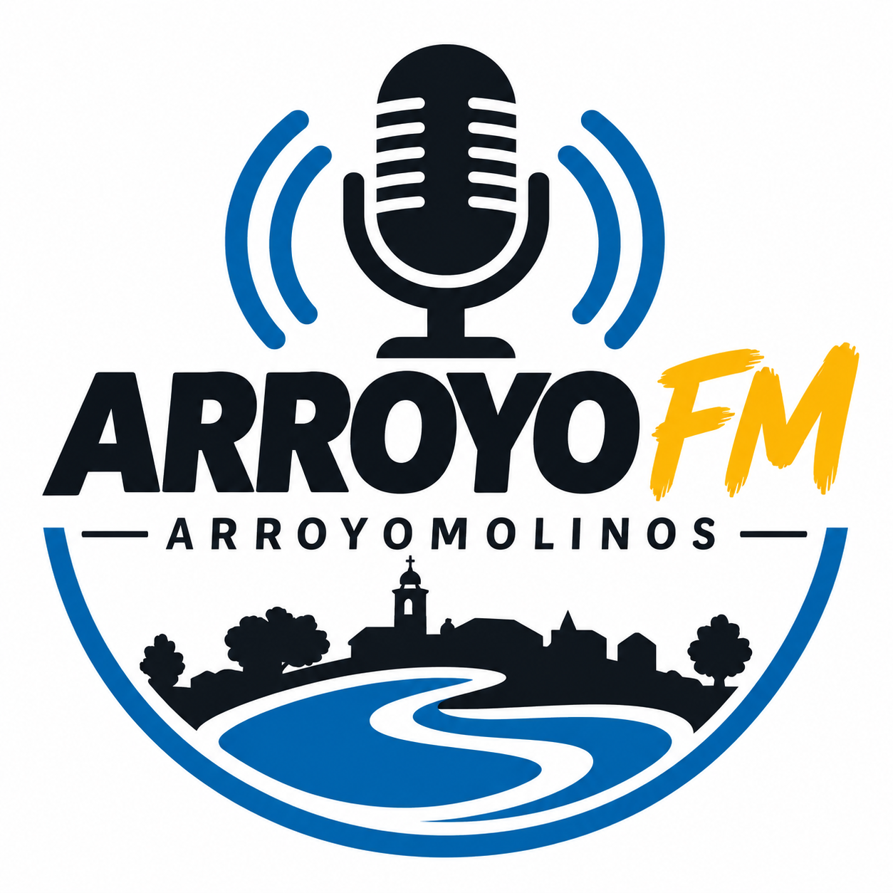

Panel de emisión
Controla qué señal escucha tu audiencia en Arroyo FM.
Configuración del reproductor
Elige qué reproductor quieres mostrar en la web.

Controla qué señal escucha tu audiencia en Arroyo FM.
Elige qué reproductor quieres mostrar en la web.